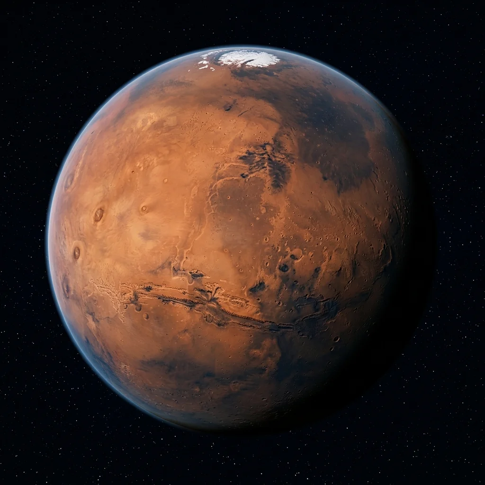

Olympus Mons (21.9 km)
Nearly 2.5× Everest’s height above sea level and as wide as Arizona, built by one stationary volcanic hotspot over a crust without moving plates.
Solar system voyage · Stop 4 of 10
Trace a canyon across the desert planet. Ancient landscapes hold clues to a wetter past.
1.52 AU from the Sun · mean distance, rounded
Investigate the sunlight
Spacecraft-inspired view. Images are not a live view; sizes and star positions are not to scale. Select an image to examine it with the class.
Predict first: move twice as far from the Sun. How much light reaches the same area?
distance from the Sun
sunlight per m², compared with Earth
one-way light travel from the Sun
1 AU ≈ 150 million km. Model: sunlight ∝ 1 / distance²; light takes about 8.32 minutes per AU. These are Sun-to-location values, not Earth-to-spacecraft communication times. Atmospheres, temperature, and orbital eccentricity are not modeled. NASA solar system reference · NASA planetary distance table.
Why must a Mars lander make its own decisions during descent?
Radio signals travel at the speed of light, but interplanetary distances still introduce minutes of delay. A landing cannot wait for a round trip to Earth.
Explain your answer using one observation from the image or lesson and one measurement from the sunlight experiment.
Planet Field Guide · Stop 4 · Terrestrial World
Mars looks like a cold desert colored by iron-oxide rust, yet orbital cameras and rovers find ancient river deltas, lakebeds, and clay minerals that could only form in standing liquid water. Understanding how Mars shifted from a wetter youth to a thin-aired freezer is one of planetary science’s central mysteries.
Driving question: Why does liquid water evaporate or freeze immediately on Mars today—even on a warm +15 °C afternoon?
Interactive Lab · Water Phase Diagram
Water cannot stay liquid below its triple-point pressure of 0.0061 bar. Today’s Martian air hovers right around that threshold, so surface ice sublimates straight into vapor when warmed. Test modern vs ancient Martian atmospheres on the phase diagram below.
Interior Structure
Select each layer to inspect what NASA’s InSight Marsquakes revealed about Mars’s core, mantle, and crust.
Geology & Scale
Nearly 2.5× Everest’s height above sea level and as wide as Arizona, built by one stationary volcanic hotspot over a crust without moving plates.
A tectonic rift canyon system long enough to stretch across the United States, dropping up to 7 km deep—nearly 4× deeper than the Grand Canyon.
An ancient lake basin where rivers deposited fan-shaped clay and carbonate sediments—now explored by NASA’s Perseverance rover for biosignatures.
Engineering · Entry, Descent & Landing
Landing a one-ton robotic rover on Mars requires decelerating from 12,000 miles per hour to a gentle stop in under seven minutes. Because radio transmissions take several minutes to reach Earth, depending on the planets’ positions, no human can pilot the craft live. The rover relies entirely on autonomous flight software, terrain-relative navigation cameras, supersonic parachutes, and a rocket-powered sky crane.
Check Your Understanding
1. Why did Olympus Mons grow nearly three times taller than Mount Everest?
Choose an answer.
2. Why can’t engineers steer a Mars rover live with a joystick from Earth?
Choose an answer.